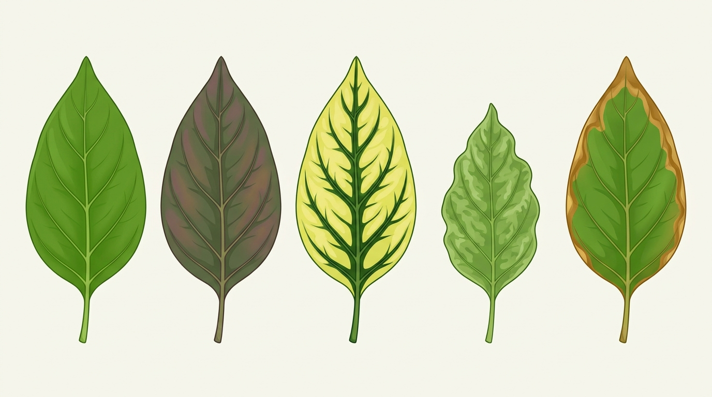

Quan sát ba cây dưới đây. Một cây bị thiếu nước, một cây bị thiếu đạm và một cây được cung cấp đủ nước, dinh dưỡng.
Thiếu nước hoặc thiếu chất khoáng đều ảnh hưởng đến sinh trưởng và phát triển của cây. Ở thực vật, dinh dưỡng là quá trình hấp thụ nước, chất khoáng và đồng hoá chúng thành chất sống của cơ thể. Vậy nước và các nguyên tố khoáng có vai trò gì đối với thực vật?
Nước là thành phần quan trọng của cơ thể thực vật và tham gia vào nhiều hoạt động sống của cây.
Như vậy, nước đảm nhiệm nhiều vai trò khác nhau trong cây. Hãy ghép mỗi hiện tượng với vai trò phù hợp nhất.
Nước có bốn vai trò chính: là thành phần cấu tạo tế bào; là dung môi và tham gia vận chuyển các chất; là nguyên liệu, môi trường của các phản ứng sinh hoá; và góp phần điều hoà nhiệt độ của cơ thể thực vật.
Không chỉ cần nước, thực vật còn cần nhiều nguyên tố khoáng. Mỗi nguyên tố tham gia vào những cấu trúc hoặc quá trình sinh lí nhất định.

Các biểu hiện thiếu khoáng không giống nhau. Vì vậy, không nên thấy lá vàng rồi mặc định rằng cây chỉ thiếu đạm. Trong hình này, mỗi trạng thái lá gắn với một nguyên tố khoáng cụ thể.
Các nguyên tố khoáng tham gia cấu tạo các thành phần của tế bào và điều tiết nhiều quá trình sinh lí. Mỗi nguyên tố có vai trò riêng; khi thiếu, cây có thể xuất hiện những biểu hiện khác nhau.
Bạn đã nắm vững toàn bộ kiến thức về vai trò của nước, cơ chế phân loại và biểu hiện thiếu các nguyên tố khoáng thiết yếu ở thực vật.